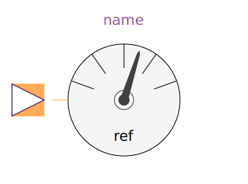
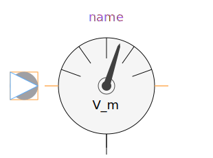
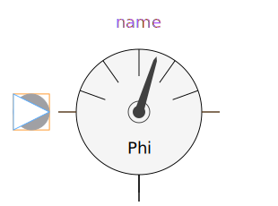

For analysis of magnetic networks, only magnetic potential differences and magnetic flux are variables of interest. For that reason, a magnetic potential sensor is not provided.
| Name | Description |
|---|---|
|  ReferenceSensor | Sensor of reference angle gamma |
| FrequencySensor | Frequency sensor |
|
|
Potential sensor |
|  MagneticPotentialDifferenceSensor | Sensor to measure magnetic potential difference |
|  MagneticFluxSensor | Sensor to measure magnetic flux |
| Transient fundamental wave sensors |